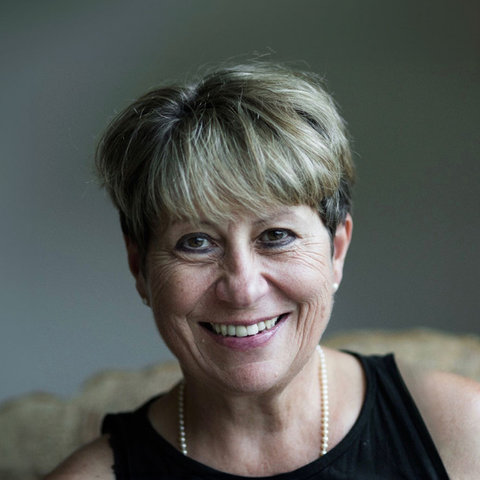

Prof. Ruth Crick
Ruth is Founder of WILD Learning Sciences CIC and WILD Learning Ltd. She has held leadership roles in research, practice, policy and enterprise with a common focus on the development of competence in self-leadership, learning relationships and complex problem solving for individuals, teams and organisations.
Ruth brings extensive thought leadership based on 25 years of research into dispositional learning analytics at the University of Bristol and the Connected Intelligence Centre at UTS in Sydney. This provides the evidence base for Work Integrated Learning Design (WILD) as a digital learning infrastructure which scaffolds, develops and measures personal and team resilience. Her work has spanned business, education and community in projects around the world. The Crick Learning for Resilient Agency profile was published in 2015 and has been translated into several languages.